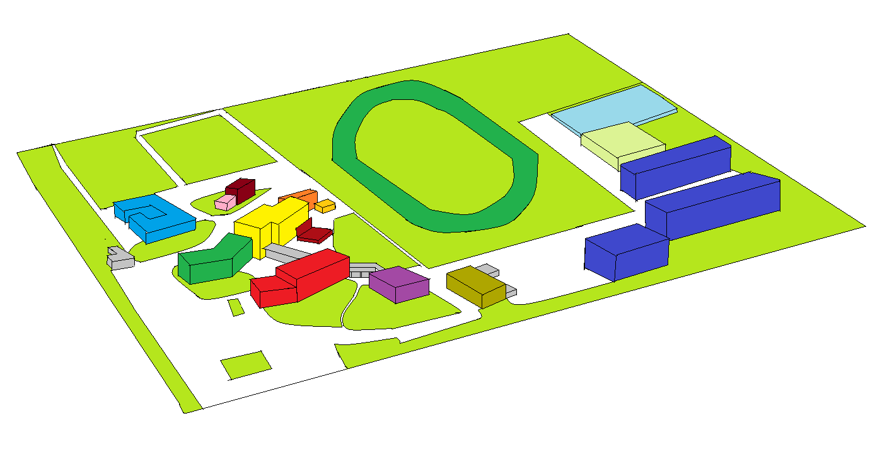

<!DOCTYPE html>

<html lang="en" xmlns="http://www.w3.org/1999/xhtml">
<head>
    <meta charset="utf-8" />
    <title>高専祭</title>
    <link rel="stylesheet" type="text/css" href="home_style.css">
</head>
<body>
    <div id="header" align="center">s

    <h1>校内マップ</h1>

    <div id="menu">
    <ul>
    <li><a href="home.html">ホーム</a></li>
    <li><a href="nakaniwa.html">中庭へ</a></li>
    <li><a href="#">共通棟へ</a></li>
    <li><a href="#">専門棟へ</a></li>
    <li><a href="#">第1体育館前へ</a></li>
    <li><a href="#">グラウンドへ</a></li>
    </ul> 
    </div>

    

    <map name="overall">
    <area shape="rect" coords="83,64,220,272" href="nakaniwa.html" alt="中庭">
    </map>

    <h2>施設名称</h2>
    <hr size="5" width="80%" color="#191970">         
    
    <table border="1" width="70%" cellspacing="0" cellpadding="5" bordercolor="#000000">
        <tr>
            <th>番号</th>
            <th>施設名</th>
            <th>会場・用途</th>
        </tr>
        <tr>
            <td>1</td>
            <td>共通教育・管理棟</td>
            <td>部活バザー・展示等</td>
        </tr>
         <tr>
            <td>2</td>
            <td>専門科目棟-1</td>
            <td>展示等</td>
        </tr>
         <tr>
            <td>3</td>
            <td>専門科目棟-2</td>
            <td>立入禁止</td>
        </tr>
         <tr>
            <td>4</td>
            <td>専攻科棟</td>
            <td>立入禁止</td>
        </tr>
         <tr>
            <td>5</td>
            <td>共同教育研究棟</td>
            <td>立入禁止</td>
        </tr>
         <tr>
            <td>6</td>
            <td>実習・実験棟</td>
            <td>展示等</td>
        </tr>
         <tr>
            <td>7</td>
            <td>図書館</td>
            <td>図書館</td>
        </tr>
         <tr>
            <td>8</td>
            <td>学生教職員食堂</td>
            <td>学食</td>
        </tr>
         <tr>
            <td>9</td>
            <td>龍峰会館</td>
            <td>展示等</td>
        </tr>
         <tr>
            <td>10</td>
            <td>学生寮(八龍寮・夕葉寮)</td>
            <td>立入禁止</td>
        </tr>
         <tr>
            <td>11</td>
            <td>第1体育館</td>
            <td>発表等</td>
        </tr>
         <tr>
            <td>12</td>
            <td>第2体育館</td>
            <td>発表等</td>
        </tr>
         <tr>
            <td>13</td>
            <td>プール</td>
            <td>立入禁止</td>
        </tr>
         <tr>
            <td>14</td>
            <td>宿泊研究所</td>
            <td>立入禁止</td>
        </tr>         
    </table>
    </div>

    <div id="footer" align="left">
        <p><a href="#">
        球技クラスマッチ</a></p>
        <p><a href="#">
        高専祭本祭</a></p>
        <p><a href="http://sysken.y.kumamoto-nct.ac.jp/">
        SYSKEN WEB</a></p>
        <p><a href="http://www.kumamoto-nct.ac.jp/">熊本高等専門学校公式HP</a></p>
    </div>
</body>
</html>
